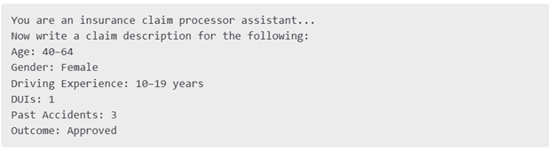
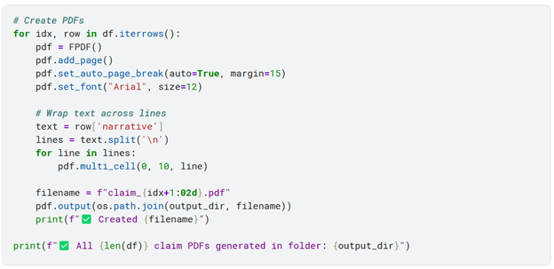
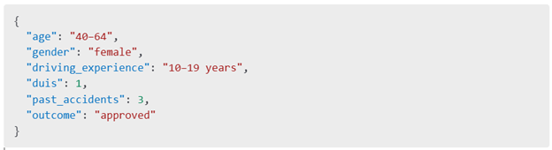
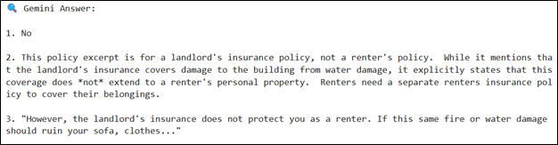

📌 Problem Statement
Insurance companies are overwhelmed with thousands of incoming claims, many submitted as PDFs, scanned documents, or poorly written narratives. This creates a major challenge for:
- Claims intake agents, who must read and extract structured fields
- Coverage validation teams, who assess whether the claim is eligible
- Customer service teams, who face long turnaround times and poor clarity
Manual processing slows everything down, introduces human error, and leaves policyholders frustrated.
📌 Solution - ClaimGenie
ClaimGenie is a GenAI-powered prototype that I built to simulate and automate early-stage claim processing using:
- Few-shot prompting for realistic human-like narrative generation from structured data
- PDF simulation to mimic real claim documents
- GenAI document parsing to extract structured information (JSON fields) from unstructured narratives
- Retrieval-Augmented Generation (RAG) for answering questions based on insurance policy documents
This end-to-end flow shows how GenAI can improve claim processing, reduce turnaround time, and deliver policy-aware decision support.
📌 Stakeholders & Impact
| Claims Intake Agents | Extracting structured data from messy text | Auto-extraction using LLMs |
| Underwriters | Delays in understanding claim coverage | RAG-generated, policy-aware summaries |
| Ops & AI Teams | Difficulty automating intake workflows | End-to-end scalable GenAI pipeline |
| Policyholders | Repetitive forms, slow feedback, confusion | Faster decisions, fewer errors (indirect benefit) |
📌 ClaimGenie GenAI Workflow Overview
This visual shows the 5-phase GenAI pipeline used in the ClaimGenie prototype, from structured input to policy-aware Q&A.
Figure 1: End-to-End Workflow from data to policy-grounded answers
📌 System Architecture Diagram
This architecture diagram outlines the input data, core processes, libraries, and GenAI methods used at each step.
Figure 2: Technical blueprint of ClaimGenie powered by Gemini, embeddings, and RAG
📌Business Process View of ClaimGenie
Beyond system architecture and technical workflow, it's equally important to understand how ClaimGenie's logic flows through a real-world claims environment. The diagram below represents a high-level business process view, showing how tasks progress across functional lanes—from data ingestion and AI processing to document review and backend routing.
It highlights how decisions, such as whether a document is parsable, trigger different paths like automated processing or manual review. The goal is to show how AI fits seamlessly into traditional operations—enhancing, not replacing, human judgment.
Figure 3: High-level business process flow with conditional logic and AI-human collaboration
📌 Implementation Walkthrough (Phase by Phase)
Phase 1: Data Collection & Setup
I began with a publicly available Kaggle dataset (Car_Insurance_Claim.csv) containing car insurance claims. Fields included: Age, Gender, Vehicle Type, Driving Experience, Past Accidents, DUIs, and Claim Outcome.
To simulate real-world diversity, I selected 50 sample rows that represented a range of policyholder profiles.
Phase 2: Claim Narrative Generation (Few-shot Prompting)
To mimic how a customer or agent might describe an incident, I used Gemini to turn structured rows into free-text narratives.
Prompt Template: Below is a sample few-shot style prompt used for Gemini:
Sample Output:
"A female driver between the ages of 40 and 64, with over 10 years of experience, submitted a claim after her vehicle was involved in an accident..."
Capabilities Used: Few-shot prompting, Controlled generation
Phase 3: PDF Simulation
I converted each narrative into a PDF using fpdf, simulating uploaded claim forms.
Code Snippet:
Phase 4: Document Understanding & Structured Output
I extracted raw text from each PDF using PyMuPDF, then used Gemini to extract key fields like:
Age, Gender, Vehicle Type, Driving Experience, Past Accidents, DUIs, and Claim Outcome.
Sample Gemini Prompt:
JSON Output:
Capabilities Used: Document understanding, JSON generation
Phase 5: Policy-Aware Q&A with RAG
I indexed actual policy PDFs using Gemini's embedding-001 model. Then, I embedded user queries, retrieved matching text chunks via cosine similarity, and prompted Gemini with the query + retrieved context.
Example Query:
“Is water damage to tenant property covered under this policy?”
Gemini Response:
Capabilities Used: Embeddings, Vector Search, Retrieval-Augmented Generation.
📌 Summary
This project demonstrates how Generative AI can be applied across the insurance claim lifecycle:
-
🧾 Generate realistic customer claims from structured records
🧠 Understand and extract structured info from free-text documents
📄 Ground AI decisions in actual policy wording
✅ Build a transparent and explainable RAG-based coverage advisor
Together, these phases simulate an intelligent triage system that could be deployed by insurance companies to reduce manual effort, ensure compliance, and speed up decision-making.
GenAI Capabilities Demonstrated
-
✅ Few-shot prompting
✅ Controlled generation (JSON)
✅ Document understanding
✅ Embedding & vector store
✅ Retrieval-Augmented Generation (RAG)
Dataset Inputs
-
📄 Car_Insurance_Claim.csv for structured data
📄 Real Insurance Policy PDFs:
Homeowners_Tenants_Insurance.pdf 📄 Simulated PDFs generated from free-text narratives
Reflections & Lessons Learned
- Prompt design is key to controlling output style & structure
- Not all PDFs parse cleanly — formatting consistency matters
- RAG improves LLM explainability via context grounding
- GenAI works best when chained into multi-step pipelines
Real-World Impact & What's Next
ClaimGenie paves the way for AI-driven claim workflows:
- Reduced claim processing time
- Improved agent & policyholder experience
- Future: Add chatbot, OCR for scanned files, fraud detection models
Thanks for Reading!
Explore the notebook or connect with me on LinkedIn to collaborate on GenAI in insurance & finance.